Three lotion finishes and two roller materials on the approved glass bodies. Both roller materials have a level flange. The metal insert now sits slightly lower to meet the rim cleanly. New component artwork is ready for visual review. The bottle shape, size and collar alignment remain fixed.
15 lotion combinations · 100 roller combinations · Original sources and previous assemblies preserved.
Actual localhost product page
Before and after
Clear glass, black pump trim or dotted roller cap. These are captures from the actual product page. Use the live page above for the other colors and finishes.
Previous assemblyUpdated candidate
Shared component masters

One white treatment-pump headSteel ball and full press-fit plugPlastic ball and matching plug
The pump head follows the original Photoshop source. Roller artwork was regenerated from the existing full inserts. The approved internal tube is reused; the lotion pump’s internal chamber still needs comparison with a physical sample. These pictures are visual representations, not manufacturing drawings.